🚀 Chapter 12 (Full-Proof Copy Master) 100% Google Docs Compatible with Images (Loaded from local `images/ch12/`)
अध्याय 12: कांग्रेस प्रणाली: चुनौतियाँ और पुनर्स्थापना
(Challenges to & Restoration of the Congress System)
भाग 1: राजनीतिक उत्तराधिकार की चुनौती (Challenge of Political Succession)
1960 के दशक को भारतीय राजनीति में 'खतरनाक दशक' (Dangerous Decade) कहा जाता है, क्योंकि इस दौर में गरीबी, असमानता, साम्प्रदायिक विभाजन और मानसून विफलता के साथ-साथ देश ने दो महान प्रधानमंत्रियों का आकस्मिक निधन झेला।
1.1 नेहरू के बाद शास्त्री युग एवं 'जय जवान जय किसान' (1964 - 1966)
मई 1964 में पंडित जवाहरलाल नेहरू के निधन के बाद देश के सामने सबसे बड़ा सवाल था—"नेहरू के बाद कौन और भारत का लोकतंत्र कैसे कायम रहेगा?" कांग्रेस अध्यक्ष के. कामराज ने पार्टी नेताओं से सलाह-मशविरा कर लाल बहादुर शास्त्री को निर्विरोध प्रधानमंत्री चुना।
ऐतिहासिक समाचार (27 मई 1964): पंडित नेहरू का निधन
चित्र की विस्तृत व्याख्या एवं ऐतिहासिक संदर्भ: 27 मई 1964 को भारत के प्रथम प्रधानमंत्री पंडित जवाहरलाल नेहरू के निधन की 'द हिंदुस्तान टाइम्स' की ऐतिहासिक मुख्य पृष्ठ की खबर। नेहरू जी के निधन के पश्चात देश में दो मुख्य संशय उत्पन्न हुए—पहला, 'नेहरू के बाद कौन?' और दूसरा, 'क्या भारत का लोकतंत्र नेहरू के बिना कायम रह पाएगा?'। पश्चिमी विश्लेषकों का मानना था कि नेहरू के बाद भारत में सेना का शासन आ सकता है या देश का विघटन हो सकता है। परंतु भारतीय लोकतंत्र ने शास्त्री जी को निर्विरोध चुनकर इस आशंका को पूरी तरह निरस्त कर दिया।
- शास्त्री जी का सादगीपूर्ण नेतृत्व: शास्त्री जी 1951 से कांग्रेस संगठन में सक्रिय थे और नेहरू मंत्रिमण्डल में निष्ठावान मंत्री रहे। वे अपनी सादगी और सिद्धांतों के लिए जाने जाते थे (रेल दुर्घटना पर नैतिकता के आधार पर रेल मंत्री पद से इस्तीफा दिया था)।
- दो मुख्य चुनौतियाँ:
1. खाद्यान्न संकट (Food Crisis): देश में भयंकर अकाल और खाद्यान्न की कमी।
2. 1965 भारत-पाक युद्ध: पाकिस्तान का भारत पर आक्रमण।
- जय जवान जय किसान: शास्त्री जी ने सीमा पर डटे सैनिकों और खेतों में मेहनत करते किसानों का मनोबल बढ़ाने के लिए 'जय जवान जय किसान' का ऐतिहासिक नारा दिया।
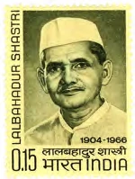
लाल बहादुर शास्त्री (1904 - 1966)
• पद: भारत के दूसरे प्रधानमंत्री (1964 - 1966)।
• योगदान: 1965 के भारत-पाक युद्ध में दृढ़ नेतृत्व, 'जय जवान जय किसान' का नारा, और दुग्ध उत्पादन बढ़ाने हेतु 'श्वेत क्रांति' (White Revolution / Amul) को प्रोत्साहन। ताशकंद में 10 जनवरी 1966 को रहस्यमयी परिस्थितियों में निधन।
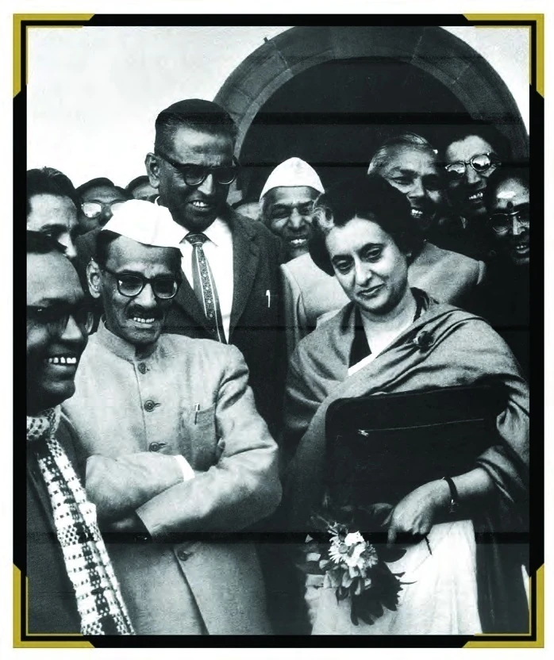
ऐतिहासिक चित्र: लाल बहादुर शास्त्री और इंदिरा गांधी
चित्र की विस्तृत व्याख्या एवं ऐतिहासिक संदर्भ: 1964-1966 के शास्त्री मंत्रिमण्डल में सूचना एवं प्रसारण मंत्री (Information & Broadcasting Minister) के रूप में कार्य कर रहीं इंदिरा गांधी का ऐतिहासिक चित्र। लाल बहादुर शास्त्री जी ने सादगी, ईमानदारी और दृढ इच्छाशक्ति का परिचय देते हुए 'जय जवान जय किसान' का नारा दिया। शास्त्री जी के अल्पकाल (1964-1966) में ही भारत ने 1965 का भारत-पाक युद्ध जीता तथा दुग्ध क्रांति (Amul/White Revolution) और खाद्यान्न सुरक्षा की नींव रखी।
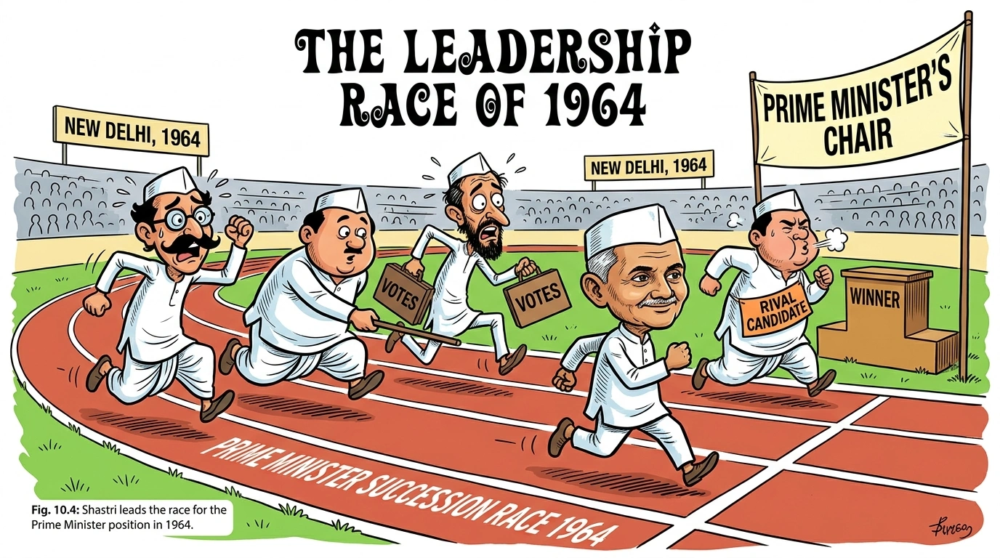
विषय सार 1: नेहरू के बाद उत्तराधिकार एवं शास्त्री युग (1964)
दृश्य व्याख्या एवं पाठ्यपुस्तकीय महत्व : यह 16:9 सचित्र चार्ट 1964 के प्रथम राजनीतिक उत्तराधिकार की ऐतिहासिक घटनाओं को समाहित करता है। इसमें नेहरू के निधन के बाद कांग्रेस अध्यक्ष के. कामराज द्वारा लोकतांत्रिक सहमति से लाल बहादुर शास्त्री के निर्विरोध चयन, 1965 के भारत-पाक युद्ध में भारतीय सेना के पराक्रम, तथा अकाल व खाद्यान्न संकट से निपटने हेतु शास्त्री जी द्वारा दिए गए ऐतिहासिक नारे 'जय जवान जय किसान' के सामरिक व राष्ट्रीय महत्व को प्रस्तुत किया गया है।
1.2 ताशकंद समझौता और इंदिरा गांधी का आगमन (1966)
10 जनवरी 1966 को ताशकंद (सोवियत संघ) में पाकिस्तान के राष्ट्रपति अय्यूब खान के साथ शांति समझौते पर हस्ताक्षर करने के कुछ ही घंटों बाद शास्त्री जी का आकस्मिक निधन हो गया। इसके बाद पुनः उत्तराधिकार का संकट खड़ा हुआ।
- इंदिरा गांधी बनाम मोरारजी देसाई: इस बार प्रधानमंत्री पद के लिए सीधा मुकाबला हुआ। एक तरफ मोरारजी देसाई (बॉम्बे के पूर्व सीएम व वरिष्ठ नेता) थे, तो दूसरी तरफ इंदिरा गांधी (नेहरू की पुत्री व कांग्रेस अध्यक्ष रह चुकीं)।
- संसदीय दल में गुप्त मतदान: सिंडिकेट के नेताओं ने इंदिरा गांधी का समर्थन किया। कांग्रेस सांसदों के गुप्त मतदान में इंदिरा गांधी ने मोरारजी देसाई को भारी मतों से हराकर प्रधानमंत्री पद हासिल किया।
- सिंडिकेट की रणनीति: वरिष्ठ नेताओं का मानना था कि इंदिरा गांधी प्रशासनिक मामलों में नई हैं, इसलिए वे अपने मार्गदर्शन के लिए सिंडिकेट पर निर्भर रहेंगी।
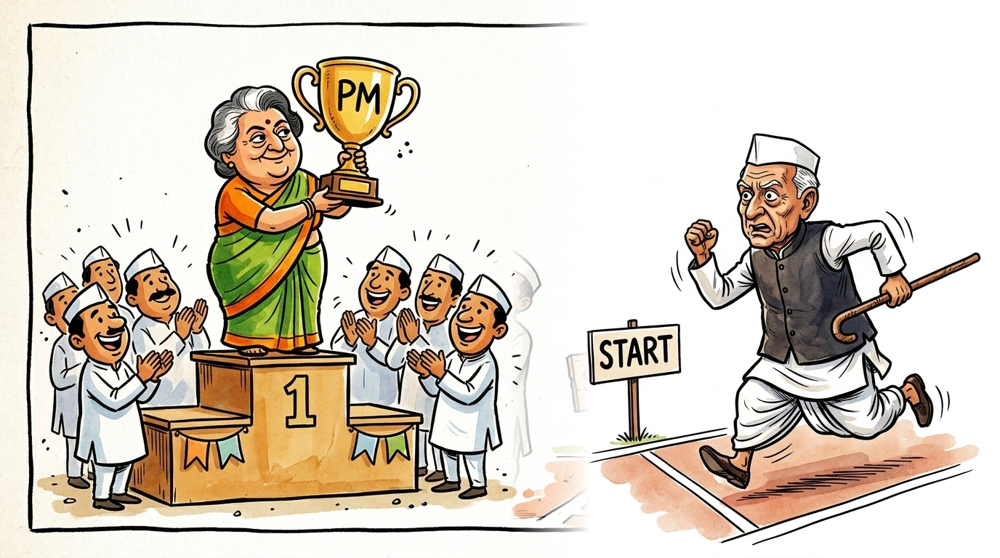
NCERT कार्टून: 1966 का उत्तराधिकार मुकाबला
चित्र की विस्तृत व्याख्या एवं कार्टून विश्लेषण: जनवरी 1966 में ताशकंद समझौते के बाद लाल बहादुर शास्त्री के अचानक निधन से उत्पन्न दूसरे उत्तराधिकार संकट पर आर.के. लक्ष्मण का प्रसिद्ध व्यंग्यात्मक कार्टून। चित्र में प्रधानमंत्री पद की दौड़ में अनुभवी नेता मोरारजी देसाई और युवा नेत्री इंदिरा गांधी के बीच तीखे मुकाबले को दर्शाया गया है। मोरारजी देसाई स्वयं को वरिष्ठता के आधार पर स्वाभाविक दावेदार मानते थे, जबकि इंदिरा गांधी को सिंडिकेट के नेताओं का समर्थन प्राप्त था।
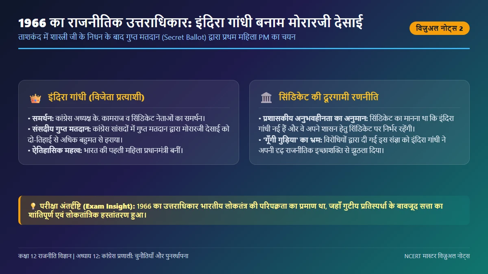
विषय सार 2: 1966 उत्तराधिकार - इंदिरा गांधी बनाम मोरारजी देसाई
दृश्य व्याख्या एवं परीक्षा अंतर्दृष्टि : यह 16:9 सचित्र चार्ट 1966 के दूसरे उत्तराधिकार संग्राम को प्रदर्शित करता है। कांग्रेस संसदीय दल के इतिहास में पहली बार गुप्त मतदान (Secret Ballot) हुआ, जिसमें इंदिरा गांधी ने मोरारजी देसाई को दो-तिहाई से अधिक बहुमत से हराया। कांग्रेस अध्यक्ष के. कामराज और सिंडिकेट नेताओं ने इंदिरा गांधी का समर्थन इस सोच के साथ किया था कि प्रशासनिक अनुभव कम होने के कारण इंदिरा गांधी अपने निर्णयों के लिए सिंडिकेट पर निर्भर रहेंगी।
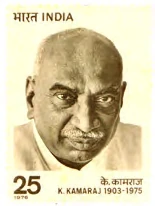
के. कामराज (1903 - 1975)
• पद: मद्रास (तमिलनाडु) के पूर्व मुख्यमंत्री, स्वतंत्रता सेनानी और कांग्रेस के राष्ट्रीय अध्यक्ष (1963-1967)।
• कामराज योजना (Kamraj Plan): 1963 में प्रस्ताव दिया कि वरिष्ठ कांग्रेसी नेता मंत्री पद त्याग कर संगठन का काम संभालें। उन्हें भारतीय राजनीति का 'किंगमेकर' (Kingmaker) कहा जाता था जिन्होंने शास्त्री जी और इंदिरा गांधी दोनों को PM बनाने में अहम भूमिका निभाई।
भाग 2: 1967 के चौथे आम चुनाव और 'राजनैतिक भूकंप' (1967 Fourth General Elections)
1967 के चौथे आम चुनाव भारत के लोकतांत्रिक इतिहास का एक बड़ा मोड़ साबित हुए। यह पहला चुनाव था जो जवाहरलाल नेहरू के बिना लड़ा गया।
2.1 आर्थिक संकट और 'गैर-कांग्रेसवाद' का सिद्धांत
- आर्थिक संकट का दौर: 1965-66 में सूखा, खाद्यान्न की कमी, विदेशी मुद्रा भंडार में गिरावट और अमेरिकी दबाव में भारतीय रुपये का अवमूल्यन (Devaluation of Rupee - $1 = ₹5 से बढ़ाकर ₹7.50)। इससे महंगाई और बंद का माहौल बना।
- गैर-कांग्रेसवाद (Non-Congressism): समाजवादी नेता डॉ. राममनोहर लोहिया ने तर्क दिया कि कांग्रेस का शासन अलोकतांत्रिक और गरीबों के खिलाफ है। उन्होंने गैर-कांग्रेसी विपक्षी दलों से एक एकजुट होकर चुनाव लड़ने का आह्वान किया ताकि कांग्रेस को सत्ता से बाहर किया जा सके।
ऐतिहासिक चुनाव चिह्न: दो बैलों की जोड़ी (1952 - 1969)
चित्र की विस्तृत व्याख्या एवं ऐतिहासिक संदर्भ: 1952 के प्रथम आम चुनाव से लेकर 1969 के विभाजन तक भारतीय राष्ट्रीय कांग्रेस का अधिकृत चुनाव चिह्न 'दो बैलों की जोड़ी' (Two Bullocks with Yoke) था। यह चुनाव चिह्न भारत की कृषि आधारित संस्कृति और ग्रामीण जनमानस के साथ कांग्रेस के गहरे जुड़ाव का प्रतीक था। 1969 में विभाजन के बाद चुनाव आयोग ने इस निशान को ज़ब्त (Freeze) कर दिया था। इसके पश्चात् इंदिरा गांधी की नई कांग्रेस (R) को 'गाय और बछड़ा' तथा 1978 में 'हाथ का पंजा' चुनाव निशान मिला।
2.2 1967 के चुनावी परिणाम (Political Earthquake)
- केंद्र में बहुमत घटा: लोकसभा में कांग्रेस को बहुमत तो मिला, लेकिन 1952 के बाद सबसे कम सीटें (283 सीटें) प्राप्त हुईं। कई केंद्रीय मंत्री चुनाव हार गए (जैसे के. कामराज, एस.के. पाटिल, अतुल्य घोष)।
- 9 राज्यों में कांग्रेस बाहर: भारत के 9 राज्यों (पंजाब, हरियाणा, यूपी, बिहार, पश्चिम बंगाल, उड़ीसा, मद्रास, केरल और एमपी) में कांग्रेस सरकार बनाने से चूक गई। मद्रास (तमिलनाडु) में पहली बार द्रमुक (DMK) को पूर्ण बहुमत मिला।
ऐतिहासिक मानचित्र: 1967 में गैर-कांग्रेसी राज्यों का उदय
चित्र की विस्तृत व्याख्या एवं मानचित्र विश्लेषण: 1967 के चौथे आम चुनावों के क्रांतिकारी परिणामों को प्रदर्शित करता भारत का राजनीतिक मानचित्र। 1967 में इतिहास में पहली बार कांग्रेस को केंद्र में बेहद क्षणीय बहुमत (283 सीटें) मिला और देश के 9 प्रमुख राज्यों (पंजाब, हरियाणा, उत्तर प्रदेश, बिहार, पश्चिम बंगाल, ओडिशा, मद्रास/तमिलनाडु, केरल तथा मध्य प्रदेश) में गैर-कांग्रेसी सरकारें बनीं। मद्रास (तमिलनाडु) में सी.एन. अन्नादुरै के नेतृत्व में द्रमुक (DMK) ने पूर्ण बहुमत हासिल किया, जो किसी क्षेत्रीय दल द्वारा एकल रूप से सरकार बनाने का पहला उदाहरण था।
डॉ. राम मनोहर लोहिया (1910 - 1967)
• परिचय: भारत के महान समाजवादी विचारक, स्वतंत्रता सेनानी और प्रखर संसदविद।
• सिद्धान्त: 'गैर-कांग्रेसवाद' (Non-Congressism) के जनक और पिछड़ों को 60% आरक्षण के समर्थक। संयुक्त सोशलिस्ट पार्टी (SSP) के संस्थापक।
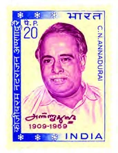
सी. नटराजन अन्नादुरै (1909 - 1969)
• परिचय: द्रविड़ मुन्नेत्र कड़गम (DMK) के संस्थापक और तमिलनाडु के लोकप्रिय मुख्यमंत्री (1967-69)।
• उपलब्धि: 1965 के हिंदी विरोधी आंदोलन के नायक। 1967 में किसी एक राज्य में स्पष्ट बहुमत पाने वाले पहले क्षेत्रीय दल के नेता।
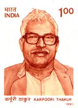
कर्पूरी ठाकुर (1924 - 1988)
• परिचय: 'जननायक' के नाम से प्रसिद्ध, बिहार के दो बार मुख्यमंत्री रहे समाजवादी नेता।
• उपलब्धि: 1970 में बिहार में पहली संविद सरकार का नेतृत्व किया तथा पिछड़ों हेतु मुंगेरी लाल आयोग की सिफारिशों के तहत आरक्षण लागू किया (2024 में भारत रत्न से सम्मानित)।
📖 केस स्टडी (NCERT Case Study): राजस्थान के देवीसर गाँव में 1967 का चुनाव
घटनाक्रम: राजस्थान के चोमू (जयपुर) के पास देवीसर गाँव में 1967 के चुनावों में पारंपरिक कांग्रेस निष्ठा के बजाय ग्रामीणों ने स्थानीय मुद्दों पर स्वतंत्र प्रत्याशी और विपक्षी दलों का समर्थन किया। इसने दिखाया कि ग्रामीण भारतीय मतदाता अब जागरूक हो चुके थे और केवल पार्टी चिन्ह पर आँख बंद करके वोट नहीं दे रहे थे।
ऐतिहासिक चित्र: 1967 के चौथे आम चुनाव में राजस्थान के देवीसर गाँव का मतदान केंद्र
चित्र की विस्तृत व्याख्या एवं ऐतिहासिक संदर्भ: 1967 के चौथे आम चुनावों के दौरान राजस्थान के देवीसर (Devisar) गाँव में मतदाताओं की भारी भागीदारी और उत्साह को दर्शाता ऐतिहासिक चित्र। यह दर्शाता है कि किस प्रकार भारतीय ग्रामीण अंचल में लोकतंत्र की जड़ें गहरी हो चुकी थीं और मतदाता अपने मताधिकार के प्रति जागरूक हो रहे थे।
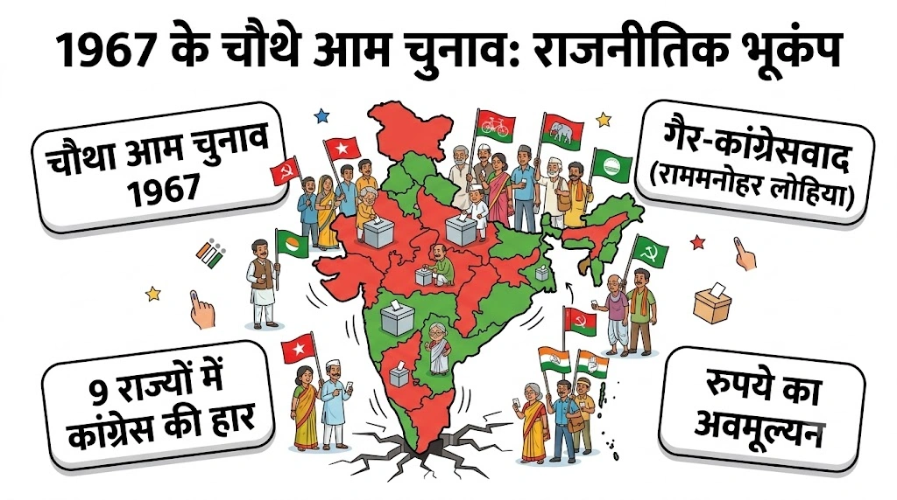
विषय सार 3: 1967 का चौथा आम चुनाव (राजनीतिक भूकंप)
दृश्य व्याख्या एवं पाठ्यपुस्तकीय महत्व : यह 16:9 सचित्र चार्ट 1967 के चौथे आम चुनावों को 'राजनीतिक भूकंप' (Political Earthquake) कहे जाने के कारणों को स्पष्ट करता है। डॉ. राममनोहर लोहिया के 'गैर-कांग्रेसवाद' के सिद्धांत, सूखे व मुद्रा अवमूल्यन जनित आर्थिक असंतोष, 9 राज्यों से कांग्रेस का सफाया और भारतीय राजनीति में 'कांग्रेस प्रणाली' (Congress System) के प्रथम विघटन के मील के पत्थर को संक्षेप में विश्लेषित करता है।
2.3 संविद सरकारें और 'आया राम, गया राम' (Aya Ram, Gaya Ram - Coalition Era)
- संविद (SVD) सरकारें: 1967 में जहाँ किसी पार्टी को बहुमत नहीं मिला, वहाँ गैर-कांग्रेसी दलों ने मिलकर 'संयुक्त विधायक दल' (SVD) की सरकारें बनाईं (जैसे यूपी, बिहार, पंजाब)। इनमें वामपंथी और जनसंघ जैसे विरोधी दल भी साथ आए।
- दल-बदल (Defection): कोई जनप्रतिनिधि जिस पार्टी के चुनाव चिह्न पर जीतकर आए, उसे छोड़कर दूसरी पार्टी में शामिल हो जाए।
- 'आया राम, गया राम' का जुमला: 1967 में हरियाणा के विधायक गया लाल ने 15 दिनों के भीतर तीन बार अपनी पार्टी बदली (कांग्रेस -> जनता पार्टी -> कांग्रेस -> जनता पार्टी)। इस पर कांग्रेस नेता राव बीरेंद्र सिंह ने चंडीगढ़ में कहा—"गया राम अब आया राम हो गए हैं।" यह मुहावरा भारतीय राजनीति में दल-बदल का पर्याय बन गया।
NCERT कार्टून: 1967 की संविद सरकारें (Kutty Cartoon)
चित्र की विस्तृत व्याख्या एवं कार्टून विश्लेषण: 1967 के बाद उत्तर भारतीय राज्यों में गठित 'संयुक्त विधायक दल' (SVD) की संविद सरकारों पर कार्टूनिस्ट कुट्टी का प्रसिद्ध राजनीतिक व्यंग्य। संविद सरकारों में वामपंथी, जनसंघ, सोशलिस्ट और कांग्रेस के बागी नेता एक साथ शामिल थे। कार्टून में परस्पर विरोधी विचारधारा वाले राजनीतिक घटकों की अवसरवादी साझीदारी और उसके कारण बार-बार सरकार गिरने की राजनीतिक अस्थिरता को उजागर किया गया है।
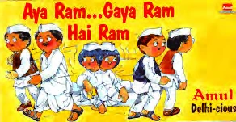
NCERT कार्टून: आया राम, गया राम (दल-बदल की राजनीति)
चित्र की विस्तृत व्याख्या एवं दल-बदल विश्लेषण: 1967 में हरियाणा के विधायक गया लाल द्वारा 15 दिनों के भीतर 3 बार दल बदलने की वास्तविक घटना पर आधारित व्यंग्यात्मक कार्टून। कांग्रेस नेता राव बीरेंद्र सिंह ने संवाददाता सम्मेलन में कहा था—'गया राम अब आया राम हो गए हैं'। इस घटना ने भारतीय राजनीति में अवसरवादी दल-बदल (Defection) को 'आया राम, गया राम' नाम दिया, जिसके बाद आगे चलकर 1985 में 52वें संविधान संशोधन द्वारा दल-बदल विरोधी कानून बनाया गया।
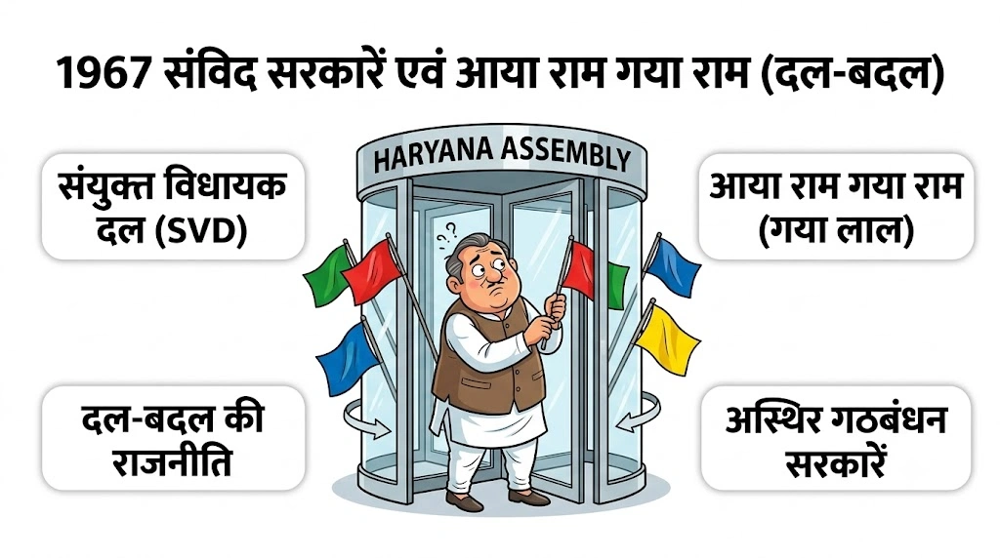
विषय सार 4: संविद सरकारें एवं 'आया राम गया राम' (दल-बदल)
दृश्य व्याख्या एवं परीक्षा अंतर्दृष्टि : यह 16:9 सचित्र चार्ट 1967 के पश्चात भारतीय राजनीति में गठबंधन युग (Coalition Era) के प्रथम चरण को रेखांकित करता है। संविद (SVD) सरकारों के गठन के तौर-तरीकों, राजनीतिक सौदेबाज़ी, विधायकों की खरीद-फरोख्त और 'आया राम गया राम' की दल-बदल संस्कृति द्वारा राज्यों में मुख्यमंत्रियों के बार-बार बदलने की प्रक्रिया को रणनीतिक रूप से समझाता है।
भाग 3: कांग्रेस का ऐतिहासिक विभाजन (The Great Split - 1969)
1967 के चुनावों के बाद कांग्रेस के भीतर आंतरिक कलह खुलकर सामने आ गई। यह लड़ाई विचार तथा पार्टी पर अधिकार को लेकर थी।
3.1 सिंडिकेट बनाम इंदिरा गांधी (Syndicate vs Indira Gandhi)
- सिंडिकेट क्या था? कांग्रेस संगठन के भीतर अनौपचारिक रूप से शक्तिशाली और प्रभावशाली नेताओं के गुट को 'सिंडिकेट' कहा जाता था। इसके मुख्य नेता थे—के. कामराज, एस. निजलिंगप्पा, एस.के. पाटिल, एन. संजीव रेड्डी, और अतुल्य घोष।
- इंदिरा गांधी की स्वतंत्र रणनीति: इंदिरा गांधी ने सिंडिकेट के प्रभाव से बाहर निकलने के लिए अपनी नीतियां वामपंथी और प्रगतिशील मोड़ की ओर बढ़ाईं। उन्होंने मई 1967 में 10-सूत्रीय कार्यक्रम (Ten-Point Programme) मंजूर कराया (बैंक नियंत्रण, भूमि सुधार, शहरी संपत्ति सीमा)।
- युवा तुर्क (Socialist Young Turks): पार्टी के भीतर चंद्रशेखर जैसे युवा समाजवादी नेताओं का समर्थन इंदिरा गांधी को प्राप्त था।
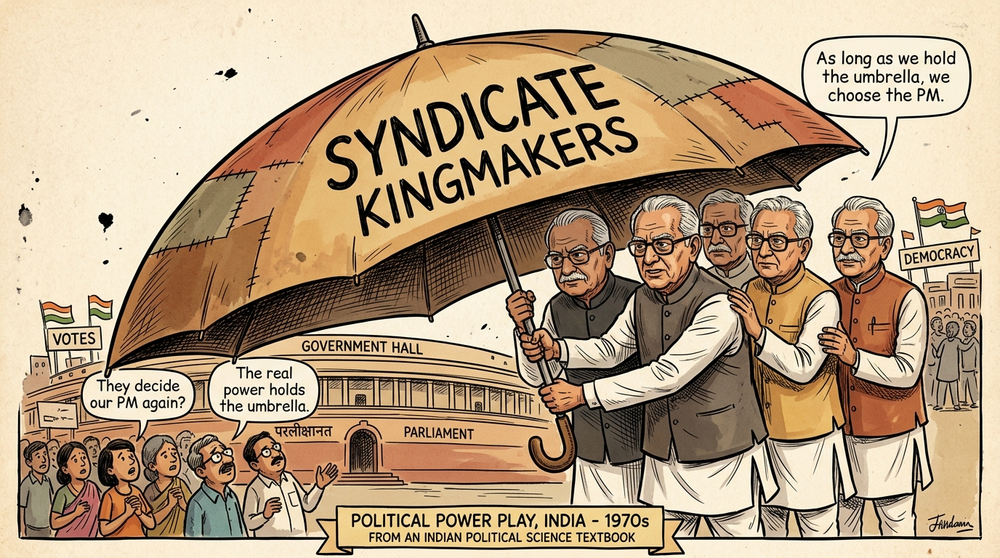
NCERT कार्टून: सिंडिकेट का प्रभाव एवं 'किंगमेकर' भूमिका
चित्र की विस्तृत व्याख्या एवं कार्टून विश्लेषण: कांग्रेस पार्टी के शक्तिशाली अनौपचारिक गुट 'सिंडिकेट' (Syndicate) के प्रभाव को दर्शाता ऐतिहासिक व्यंग्यात्मक कार्टून। सिंडिकेट में के. कामराज, एस. निजलिंगप्पा, एस.के. पाटिल, एन. संजीव रेड्डी और अतुल्य घोष जैसे प्रांतीय क्षत्रप शामिल थे। चित्र में दिखाया गया है कि किस प्रकार संगठन के ये प्रभावशाली नेता सरकार के निर्णयों और प्रधानमंत्री के चयन को नियंत्रित करते थे।
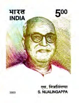
एस. निजलिंगप्पा (1902 - 2000)
• पद: मैसूर (कर्नाटक) के पूर्व मुख्यमंत्री और 1969 के विभाजन के समय कांग्रेस के राष्ट्रीय अध्यक्ष।
• भूमिका: सिंडिकेट के प्रमुख स्तंभ। इंदिरा गांधी द्वारा पार्टी अनुशासन तोड़ने पर उन्हें 12 नवंबर 1969 को कांग्रेस की प्राथमिक सदस्यता से निष्कासित किया था।
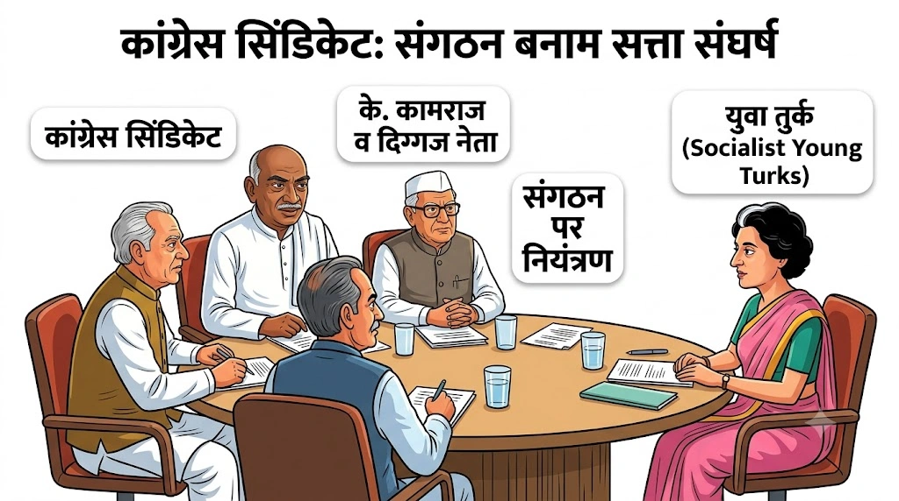
विषय सार 5: कांग्रेस सिंडिकेट - संगठन बनाम सत्ता संघर्ष
दृश्य व्याख्या एवं पाठ्यपुस्तकीय महत्व : यह 16:9 सचित्र चार्ट 1967-1969 के बीच कांग्रेस के भीतर 'संगठन बनाम सत्ता' (Party Organization vs Government) के बीच हुए भीषण संघर्ष को प्रदर्शित करता है। सिंडिकेट द्वारा इंदिरा गांधी को नियंत्रित करने का प्रयास, और दूसरी ओर इंदिरा गांधी द्वारा अपनी अलग जनप्रिय वामपंथी पहचान बनाने हेतु चलाए गए 10-सूत्रीय कार्यक्रम के टकराव को रेखांकित करता है।
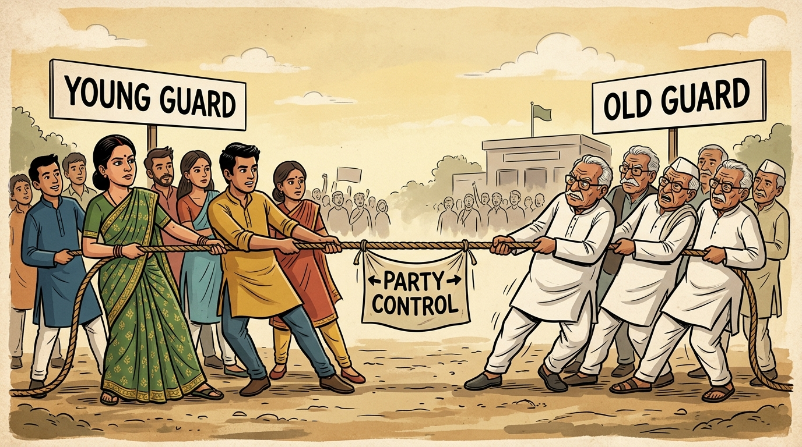
NCERT कार्टून: सिंडिकेट और इंदिरा गांधी के बीच खींचतान
चित्र की विस्तृत व्याख्या एवं कार्टून विश्लेषण: 1969 में कांग्रेस संगठन के अध्यक्ष एस. निजलिंगप्पा और प्रधानमंत्री इंदिरा गांधी के बीच सत्ता पर अंतिम एकाधिकार स्थापित करने की रस्साकशी (Tug of War) का कार्टून। सिंडिकेट पार्टी अनुशासन का हवाला दे रहा था, जबकि इंदिरा गांधी इसे 'दक्षिणपंथी बनाम वामपंथी/समाजवादी' विचारधारा की जंग बताकर आम जनता और युवा तुर्कों को अपने पाले में ला रही थीं।
3.2 1969 का ऐतिहासिक राष्ट्रपति चुनाव
मई 1969 में राष्ट्रपति डॉ. जाकिर हुसैन के निधन के बाद सिंडिकेट और इंदिरा गांधी के बीच का मतभेद खुलकर सामने आ गया।
- उम्मीदवारों का चयन: सिंडिकेट ने लोकसभा अध्यक्ष एन. संजीव रेड्डी को कांग्रेस का आधिकारिक प्रत्याशी घोषित किया। इंदिरा गांधी ने तत्कालीन उपराष्ट्रपति वी.वी. गिरि (V.V. Giri) को स्वतंत्र उम्मीदवार के रूप में चुनाव मैदान में उतरने के लिए प्रोत्साहित किया।
- अंतरात्मा की आवाज पर मतदान (Freedom of Conscience): कांग्रेस अध्यक्ष निजलिंगप्पा ने सभी कांग्रेसियों को संजीव रेड्डी को वोट देने का व्हिप (Whip) जारी किया। इसके जवाब में इंदिरा गांधी ने खुलकर सांसदों व विधायकों से अपनी "अंतरात्मा की आवाज" पर वोट देने की अपील की।
- वी.वी. गिरि की जीत: वी.वी. गिरि चुनाव जीत गए और सिंडिकेट समर्थित आधिकारिक प्रत्याशी संजीव रेड्डी हार गए। यह इंदिरा गांधी की बहुत बड़ी राजनैतिक विजय थी।
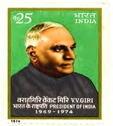
वराहगिरि वेंकट गिरि (1894 - 1980)
• पद: भारत के चौथे राष्ट्रपति (1969 - 1974)।
• उपलब्धि: प्रसिद्ध मजदूर संघ (Trade Union) नेता। 1969 के राष्ट्रपति चुनाव में इंदिरा गांधी के गुप्त समर्थन से स्वतंत्र प्रत्याशी के रूप में ऐतिहासिक जीत दर्ज की।
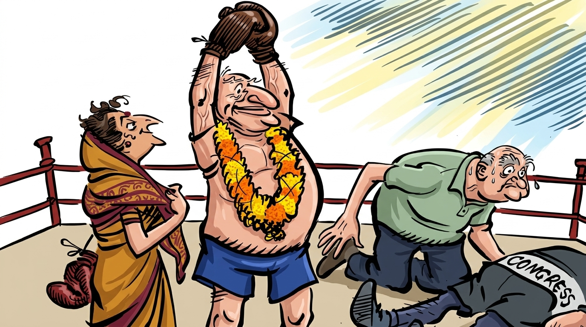
विषय सार 6: 1969 का राष्ट्रपति चुनाव (वी.वी. गिरि बनाम संजीव रेड्डी)
दृश्य व्याख्या एवं कार्टून विश्लेषण: यह प्रसिद्ध NCERT कार्टून 1969 के ऐतिहासिक राष्ट्रपति चुनाव को एक राजनीतिक बॉक्सिंग मुकाबले के रूप में चित्रित करता है। इसमें इंदिरा गांधी के अप्रत्यक्ष समर्थन से निर्दलीय उम्मीदवार वी.वी. गिरि (वी.वी. गिरि) बॉक्सिंग ग्लव्स पहनकर विजयी मुद्रा में हाथ ऊपर उठाए खड़े हैं, जबकि सिंडिकेट के आधिकारिक उम्मीदवार एन. संजीव रेड्डी (CONGRESS) रिंग में नॉकआउट होकर गिरे पड़े हैं। पास खड़े सिंडिकेट अध्यक्ष एस. निजलिंगप्पा पसीना पोंछते हुए हैरान हैं और इंदिरा गांधी कंधे पर बॉक्सिंग ग्लव्स टांगे मुस्कुरा रही हैं। यह कार्टून व्हिप के खिलाफ 'अंतरात्मा की आवाज' (Conscience Vote) के आधार पर हुई वी.वी. गिरि की सनसनीखेज जीत और सिंडिकेट के वर्चस्व के पतन का ऐतिहासिक प्रतीक है।
3.3 नवंबर 1969 का महान कांग्रेस विभाजन: Congress (O) बनाम Congress (R)
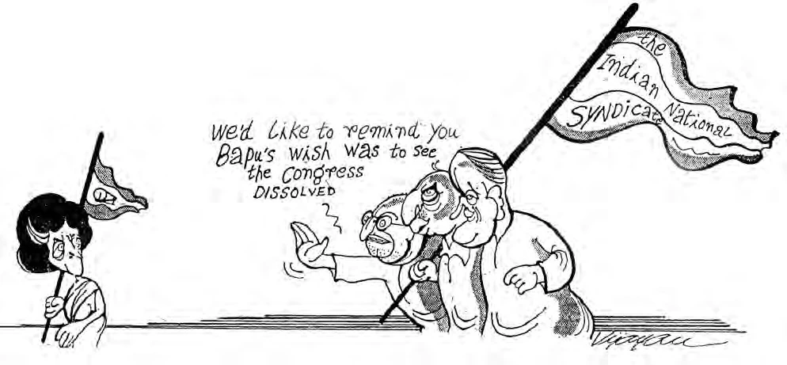
NCERT कार्टून: डॉ. राममनोहर लोहिया एवं बापू का 'कांग्रेस समाप्ति' संबंधी ऐतिहासिक विचार
चित्र की विस्तृत व्याख्या एवं ऐतिहासिक संदर्भ: इस प्रसिद्ध कार्टून में दिग्गज समाजवादी नेता डॉ. राममनोहर लोहिया, प्रधानमंत्री इंदिरा गांधी से कहते प्रतीत होते हैं कि "बापू (महात्मा गांधी) स्वयं चाहते थे कि स्वतंत्रता मिलने के तुरंत बाद कांग्रेस पार्टी को समाप्त (विघटित) कर देना चाहिए!"। डॉ. लोहिया ने ही 1967 और 1969 के दौर में 'गैर-कांग्रेसवाद' (Non-Congressism) की रणनीति दी थी। उनका मानना था कि स्वतंत्रता के बाद कांग्रेस का शासन अलोकतांत्रिक और गरीब-विरोधी हो गया है, अतः बापू की इच्छानुसार गैर-कांग्रेसी दलों को एक मंच पर आकर कांग्रेस प्रणाली का अंत करना चाहिए। 1969 के राष्ट्रपति चुनाव और पार्टी विभाजन के समय यह विचार भारतीय राजनीति में अत्यंत चर्चित रहा।
राष्ट्रपति चुनाव में अपनी हार से बौखलाए कांग्रेस अध्यक्ष एस. निजलिंगप्पा ने 12 नवंबर 1969 को प्रधानमंत्री इंदिरा गांधी को कांग्रेस पार्टी से निष्कासित कर दिया। इसके साथ ही कांग्रेस दो टुकड़ों में बंट गई:
- 1. कांग्रेस (ऑर्गनाइजेशन / संगठन) - Congress (O): सिंडिकेट नेताओं का गुट, जिसे 'पुरानी कांग्रेस' (Old Congress) कहा गया।
- 2. कांग्रेस (रिक्विजिशजिस्ट / याचनाकर्ता) - Congress (R): इंदिरा गांधी समर्थकों का गुट, जिसे 'नई कांग्रेस' (New Congress) कहा गया।
- अल्पसंख्यक सरकार को वामपंथी समर्थन: विभाजन के बाद इंदिरा गांधी की सरकार संसद में अल्पमत में आ गई, लेकिन भारतीय कम्युनिस्ट पार्टी (CPI) और द्रमुक (DMK) के बाहरी समर्थन से सरकार टिकी रही।
NCERT कार्टून: दो बैलों की जोड़ी चुनाव चिह्न पर जंग
चित्र की विस्तृत व्याख्या एवं कार्टून विश्लेषण: 12 नवंबर 1969 को निजलिंगप्पा द्वारा इंदिरा गांधी को कांग्रेस से निष्कासित किए जाने के बाद दोनों धड़ों—Congress (O) और Congress (R) के बीच पार्टी के नाम, मुख्यालय (7 जंतर मंतर) और मूल चुनाव चिह्न 'दो बैलों की जोड़ी' पर दावेदारी की कानूनी व राजनीतिक लड़ाई का व्यंग्यात्मक कार्टून।
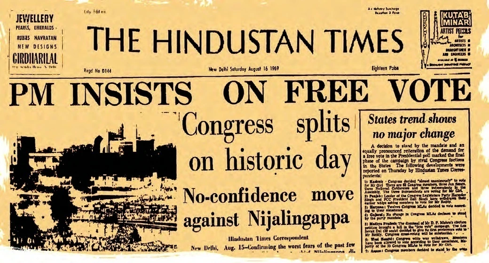
ऐतिहासिक समाचार (1969): कांग्रेस विभाजन व समाजवादी नीतियां
चित्र की विस्तृत व्याख्या एवं ऐतिहासिक संदर्भ: नवंबर 1969 के 'द हिंदुस्तान टाइम्स' का मुख्य पृष्ठ, जो 84 वर्ष पुरानी भारतीय राष्ट्रीय कांग्रेस के औपचारिक विभाजन (The Great Split of 1969) की खबर दिखाता है। इसके बाद इंदिरा गांधी ने वामपंथी दलों (CPI व DMK) के बाहरी समर्थन से सरकार चलाई और 14 बैंकों के राष्ट्रीयकरण तथा प्रिवी पर्स खात्मे जैसे बड़े समाजवादी सुधार लागू किए।
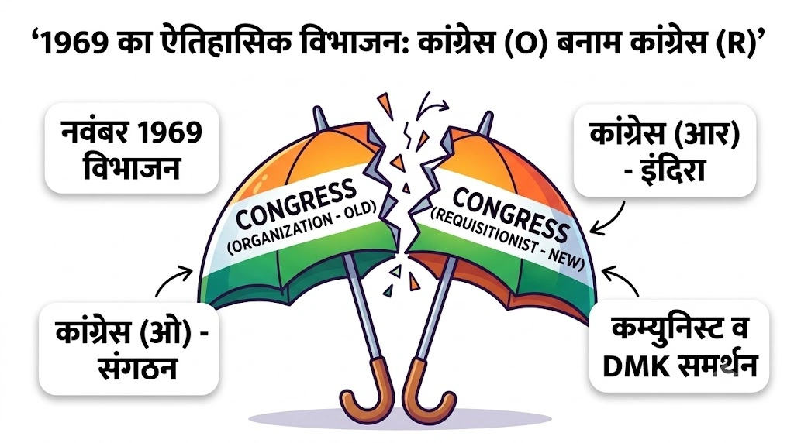
विषय सार 7: 1969 का ऐतिहासिक विभाजन (Congress-O बनाम Congress-R)
दृश्य व्याख्या एवं पाठ्यपुस्तकीय महत्व : यह 16:9 सचित्र चार्ट 1969 के महान विभाजन की दोनों धाराओं को स्पष्ट करता है। एक तरफ पुरानी सिंडिकेट की संगठनात्मक 'Congress (O)' थी तो दूसरी तरफ इंदिरा गांधी की जनकल्याणकारी, जनप्रिय व वामपंथी झुकाव वाली 'Congress (R)' थी। इंदिरा गांधी ने सिद्ध किया कि असली कांग्रेस वही है जिसके साथ जनता और बहुमत सांसद हैं।
भाग 4: प्रिवी पर्स की समाप्ति और समाजवादी कदम (Socialist Reforms)
1969 के विभाजन के बाद इंदिरा गांधी ने अपनी सरकार को गरीबों, किसानों और वंचितों की सरकार के रूप में पेश करने के लिए कड़े समाजवादी फैसले लिए।
- 14 प्रमुख बैंकों का राष्ट्रीयकरण (July 1969): देश के 14 बड़े निजी वाणिज्यिक बैंकों को सरकारी नियंत्रण में लिया गया ताकि आम जनता, किसानों और छोटे व्यवसायियों को आसानी से ऋण मिल सके।
- प्रिवी पर्स (Privy Purse) का उन्मूलन: 1947 में देसी रियासतों के विलय के समय राजा-महाराजाओं को दिए गए विशेष भत्तों और विशेषाधिकारों (Privy Purse) को समाप्त करने की घोषणा की गई। 1971 में 26वें संविधान संशोधन द्वारा इसे पूरी तरह निरस्त कर दिया गया।
- उप-प्रधानमंत्री मोरारजी देसाई का इस्तीफा: बैंकों के राष्ट्रीयकरण से असहमत होकर मोरारजी देसाई ने वित्त मंत्री एवं उप-प्रधानमंत्री पद से इस्तीफा दे दिया।
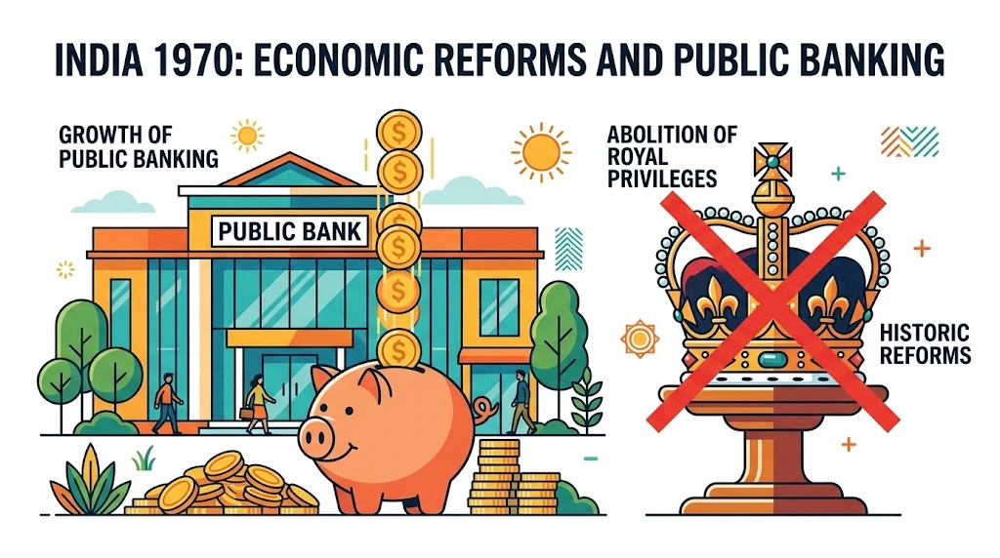
विषय सार 8: प्रिवी पर्स की समाप्ति एवं 14 बैंकों का राष्ट्रीयकरण (1969)
दृश्य व्याख्या एवं परीक्षा अंतर्दृष्टि : यह 16:9 सचित्र चार्ट 1969-1970 में इंदिरा गांधी द्वारा लिए गए साहसिक आर्थिक व नीतिगत निर्णयों को प्रदर्शित करता है। जुलाई 1969 में 14 बड़े निजी बैंकों का राष्ट्रीयकरण, देसी रियासतों के राजाओं को मिलने वाले प्रिवी पर्स (Privy Purse) और विशेषाधिकारों की समाप्ति (26वाँ संविधान संशोधन 1971), और गरीबों के पक्ष में सामाजिक-आर्थिक नीतियों के क्रियान्वयन का विस्तृत दृश्य रूप।
भाग 5: 1971 का आम चुनाव, 'गरीबी हटाओ' और प्रचंड जनादेश (Landslide Victory of 1971)
1969 के विभाजन के बाद इंदिरा गांधी की अल्पसंख्यक सरकार भारतीय कम्युनिस्ट पार्टी (CPI) और द्रमुक (DMK) के बाहरी समर्थन पर चल रही थी। इंदिरा गांधी अपनी सरकार को दूसरों पर निर्भर नहीं रखना चाहती थीं, तथा वे अपने प्रगतिशील समाजवादी कार्यक्रमों के लिए जनता से एक स्पष्ट और मजबूत जनादेश हासिल करना चाहती थीं।
5.1 दिसम्बर 1970 में लोकसभा का ऐतिहासिक विघटन
- समय-पूर्व लोकसभा भंग: इंदिरा गांधी की सरकार ने अपनी अवधि समाप्त होने से 14 माह पूर्व ही, दिसंबर 1970 में चौथी लोकसभा को भंग करने की ऐतिहासिक सिफारिश राष्ट्रपति से की।
- रणनीति और उद्देश्य: यह भारत के लोकतांत्रिक इतिहास में पहला मौका था जब किसी प्रधानमंत्री ने अपनी राजनीतिक स्थिति मजबूत करने और नीतिगत एजेंडे पर जनादेश लेने के लिए मध्यावधि चुनाव का मार्ग चुना।
- पाँचवाँ आम चुनाव (फरवरी 1971): देश में पाँचवें आम चुनाव फरवरी 1971 में आयोजित किए गए।
5.2 विपक्षी 'ग्रैंड अलायंस' (Grand Alliance) बनाम इंदिरा गांधी
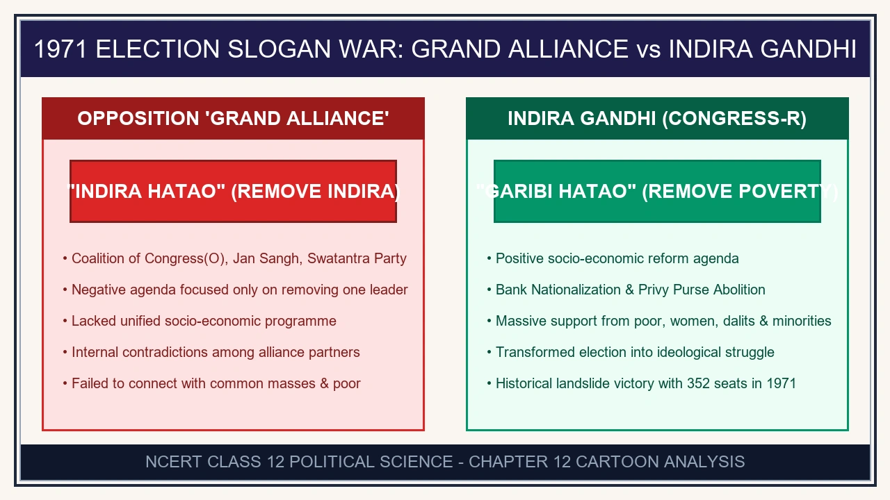
NCERT कार्टून: विपक्षी 'ग्रैंड अलायंस' (Grand Alliance) का गठबंधन
चित्र की विस्तृत व्याख्या एवं कार्टून विश्लेषण: 1971 के आम चुनावों से पूर्व गठित विपक्षी 'ग्रैंड अलायंस' (Grand Alliance) पर आर.के. लक्ष्मण का कालजयी राजनीतिक कार्टून। विपक्षी दलों (Congress-O, जनसंघ, स्वतंत्र पार्टी, सोशलिस्ट) का कोई साझा सकारात्मक कार्यक्रम नहीं था, उनका एकमात्र नारा था—'इंदिरा हटाओ'। कार्टून में दिखाया गया है कि किस प्रकार इंदिरा गांधी ने इसके जवाब में 'गरीबी हटाओ' का नारा देकर विपक्ष के गठबंधन को पूरी तरह अप्रासंगिक बना दिया।
5.3 इंदिरा गांधी का सकारात्मक एजेंडा व सामाजिक जनाधार
- 10-सूत्रीय कार्यक्रम व समाजवादी नीतियां: इंदिरा गांधी ने 14 प्रमुख निजी वाणिज्यिक बैंकों के राष्ट्रीयकरण (जुलाई 1969), प्रिवी पर्स के उन्मूलन, शहरी संपत्ति सीमा तथा भूमि सुधारों को अपने मुख्य चुनावी मुद्दे बनाए।
- नया सामाजिक जनाधार (New Social Base): इंदिरा गांधी ने पारंपरिक चुनावी गोलबंदी से हटकर समाज के शोषितों, भूमिहीन मजदूरों, दलितों, आदिवासियों, अल्पसंख्यकों, महिलाओं और युवाओं के साथ सीधा भावनात्मक व राजनीतिक संबंध स्थापित किया।
- गरीबी हटाओ की गूँज: 'गरीबी हटाओ' केवल एक नारा नहीं था, बल्कि इसने भारत के करोड़ों वंचित नागरिकों में यह विश्वास जगाया कि इंदिरा गांधी ही उनके अधिकारों की रक्षक हैं।
5.4 1971 के चुनावी नतीजे: प्रचंड बहुमत और विपक्ष का सफाया
मार्च 1971 में घोषित चुनाव परिणामों ने संपूर्ण देश और अंतरराष्ट्रीय विश्लेषकों को आश्चर्यचकित कर दिया:
- कांग्रेस (R) और CPI गठबंधन की ऐतिहासिक जीत: इंदिरा गांधी की कांग्रेस (R) और सीपीआई गठबंधन को कुल 375 सीटें हासिल हुईं। अकेले इंदिरा गांधी की कांग्रेस (R) ने 352 सीटें जीतीं तथा 44% लोकप्रिय मत प्राप्त किए।
- ग्रैंड अलायंस की करारी हार: विपक्षी 'ग्रैंड अलायंस' ताश के पत्तों की तरह ढह गया और पूरे देश में मिलकर 40 सीटों से भी कम पर सिमट गया (स्वतंत्र पार्टी 8, जनसंघ 22, सोशलिस्ट 5 सीटें)।
- सिंडिकेट (Congress-O) का पतन: सिंडिकेट की 'पुरानी कांग्रेस' (O) को केवल 16 सीटें मिलीं। सिंडिकेट के अधिकांश वरिष्ठ नेता अपने-अपने क्षेत्रों से चुनाव हार गए।
NCERT कार्टून: चुनावी नतीजे - "द ग्रैंड फिनिश"
चित्र की विस्तृत व्याख्या एवं कार्टून विश्लेषण: मार्च 1971 के चुनावी नतीजों के आने के बाद कार्टूनिस्ट कुट्टी का प्रसिद्ध कार्टून 'The Grand Finish'। 1971 के चुनावों में इंदिरा गांधी की कांग्रेस (R) और सीपीआई गठबंधन ने कुल 375 सीटें जीतीं (अकेले कांग्रेस-R को 352 सीटें मिलीं), जबकि विपक्षी 'ग्रैंड अलायंस' ताश के पत्तों की तरह ढह गया और 40 सीटों से भी कम पर सिमट गया। लक्ष्मण व कुट्टी ने दिखाया कि जनता ने 'इंदिरा हटाओ' का नकारात्मक नारा पूरी तरह खारिज कर दिया।
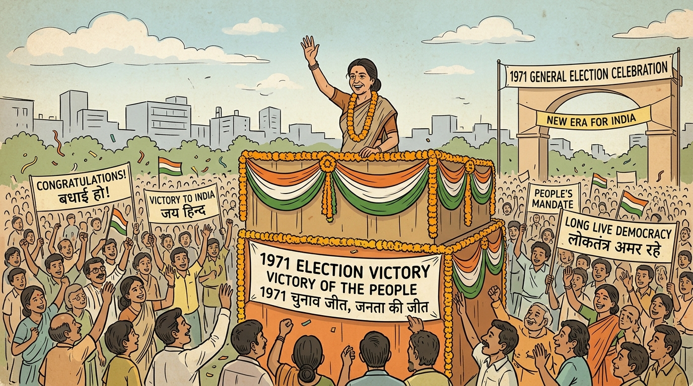
ऐतिहासिक चित्र: 1971 की प्रचंड जीत का उत्सव
चित्र की विस्तृत व्याख्या एवं ऐतिहासिक संदर्भ: मार्च 1971 के 5वें आम चुनाव में 352 सीटों की प्रचंड जीत दर्ज करने के बाद जनता के अपार जनसमर्थन और जश्न का ऐतिहासिक चित्र। इस चुनाव जीत के तुरंत बाद दिसंबर 1971 में भारत ने भारत-पाक युद्ध जीता और बांग्लादेश का निर्माण हुआ, जिससे इंदिरा गांधी का राजनीतिक कद राष्ट्रीय व अंतरराष्ट्रीय स्तर पर सर्वोच्च शिखर पर पहुँच गया।
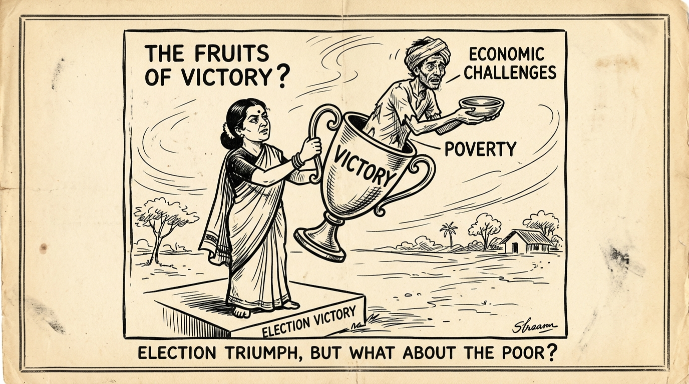
NCERT कार्टून: 1971 की प्रचंड जीत और 'गरीबी हटाओ' ट्रोफी कार्टून
चित्र की विस्तृत व्याख्या एवं कार्टून विश्लेषण: NCERT पाठ्यपुस्तक का यह प्रसिद्ध व्यंग्यात्मक कार्टून 1971 के आम चुनावों में इंदिरा गांधी की 352 सीटों की विशाल जीत और 'गरीबी हटाओ' नारे के यथार्थवादी विरोधाभास को दर्शाता है। कार्टून में दिखाया गया है कि इंदिरा गांधी हाथ में 1971 की विशाल चुनावी ट्रोफी (Trophy) लिए खड़ी हैं, परंतु उस ट्रोफी के ऊपर ढक्कन से एक गरीब नागरिक कटोरा (Begging Bowl) लिए बाहर निकल रहा है। यह दर्शाता है कि 1971 के चुनाव में 352 सीटें जीतकर इतिहास तो रचा गया, लेकिन 'गरीबी हटाओ' नारे के बावजूद धरातल पर गरीबी, मुद्रास्फीति और बेरोजगारी की समस्या जस की तस बनी रही, जिसने आगे चलकर 1970 के मध्य में भारी जन-असंतोष पैदा किया।
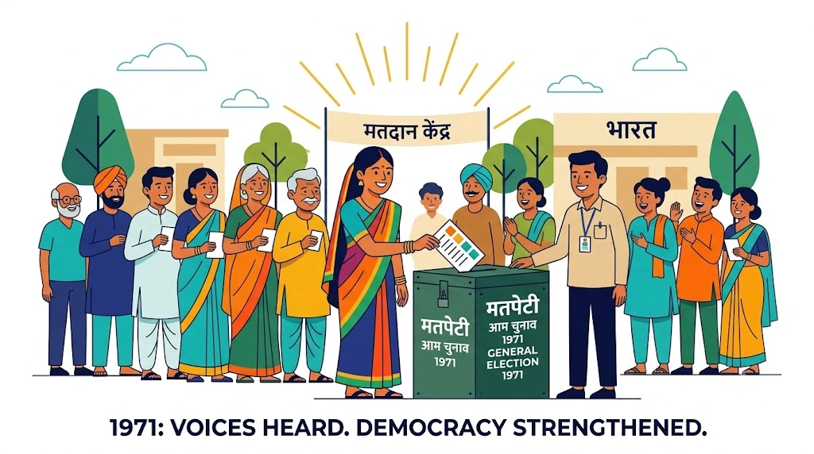
विषय सार 9: 1971 का आम चुनाव ('गरीबी हटाओ' की ऐतिहासिक जीत)
दृश्य व्याख्या एवं पाठ्यपुस्तकीय महत्व : यह 16:9 सचित्र चार्ट 1971 के ऐतिहासिक चुनावों के दूरगामी परिणामों को समाहित करता है। 'गरीबी हटाओ' नारे का करिश्मा, गरीबों, वंचितों, दलितों व महिलाओं का भारी मतदान, विपक्षी ग्रैंड अलायंस की करारी हार और इंदिरा गांधी द्वारा कांग्रेस प्रणाली को अपने इर्द-गिर्द पुनर्गठित करने की प्रक्रिया को प्रदर्शित करता है।
5.5 1971 का बांग्लादेश युद्ध और 1972 के विधानसभा चुनाव
- दिसंबर 1971 भारत-पाक युद्ध: 1971 के चुनाव जीत के तुरंत बाद पूर्वी पाकिस्तान का संकट गहराया। इंदिरा गांधी के कुशल सामरिक व कूटनीतिक नेतृत्व में भारतीय सेना ने पाकिस्तान को पराजित किया तथा 93,000 पाकिसतानी सैनिकों ने आत्मसमर्पण किया, जिससे बांग्लादेश का जन्म हुआ।
- राष्ट्रीय व अंतरराष्ट्रीय सम्मान: बांग्लादेश विजय ने इंदिरा गांधी की लोकप्रियता को अभूतपूर्व ऊंचाइयों पर पहुंचा दिया। विपक्षी दल के नेता अटल बिहारी वाजपेयी ने संसद में उन्हें 'दुर्गा' कहकर सम्मानित किया।
- मार्च 1972 के विधानसभा चुनाव (Sweeping Victory): 1972 में हुए अधिकांश राज्यों के विधानसभा चुनावों में कांग्रेस (R) ने तूफानी जीत दर्ज की। अब केंद्र और राज्यों दोनों स्तरों पर कांग्रेस का एकछत्र शासन पुनः स्थापित हो चुका था।
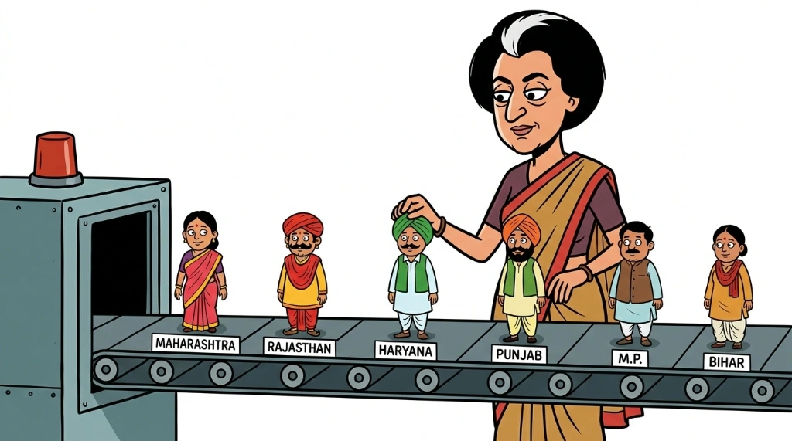
NCERT कार्टून: भारतीय राजनीति में इंदिरा गांधी का सर्वोपरि वर्चस्व एवं मुख्यमंत्रियों का फेरबदल
चित्र की विस्तृत व्याख्या एवं कार्टून विश्लेषण: 1971 के चुनाव और 1971 भारत-पाक युद्ध में जीत के बाद भारतीय राजनीति और कांग्रेस संगठन पर इंदिरा गांधी के एकछत्र व सर्वोपरि वर्चस्व को दर्शाता प्रसिद्ध NCERT कार्टून। इस कार्टून में इंदिरा गांधी की अपार शक्ति और उनकी मर्जी पर राज्यों के मुख्यमंत्रियों को हटाने व नियुक्त करने (High Command Culture) की प्रक्रिया को दर्शाया गया है। नेहरू युग की पुरानी कांग्रेस में राज्यों के मुख्यमंत्री स्वतंत्र शक्तिशाली नेता (जैसे के. कामराज, बी.सी. रॉय) हुआ करते थे, परंतु इंदिरा गांधी की 'पुनर्स्थापित नई कांग्रेस' में राज्यों के मुख्यमंत्री पूरी तरह दिल्ली हाईकमांड और इंदिरा गांधी की इच्छा पर निर्भर हो गए। अटल बिहारी वाजपेयी ने भी इस दौर में उन्हें 'दुर्गा' कहा था, जो उनकी अद्वितीय शक्ति का प्रतीक था।
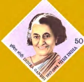
इंदिरा गांधी (1917 - 1984)
• पद: भारत की प्रथम महिला प्रधानमंत्री (1966-1977 और 1980-1984)।
• ऐतिहासिक कदम: 14 बैंकों का राष्ट्रीयकरण (1969), प्रिवी पर्स की समाप्ति, 1971 युद्ध में विजय व बांग्लादेश निर्माण, 1974 पोखरण-1 परमाणु परीक्षण। 'गरीबी हटाओ' के नारे से भारतीय राजनीति की दिशा बदली।
भाग 6: कांग्रेस प्रणाली की पुनर्स्थापना और उसकी वास्तविक प्रकृति (Restoration of Congress System)
NCERT राजनीति विज्ञान का केंद्रीय प्रश्न है: "क्या इंदिरा गांधी ने पुरानी 'कांग्रेस प्रणाली' को पुनः बहाल किया?" इसका उत्तर है कि इंदिरा गांधी ने कांग्रेस को पुनः स्थापित जरूर किया, लेकिन पुनर्स्थापित कांग्रेस की प्रकृति पुरानी नेहरूवादी कांग्रेस से मूलतः भिन्न थी।
6.1 पुरानी कांग्रेस प्रणाली (Nehru Era) बनाम नई कांग्रेस प्रणाली (Indira Era)
राजनीति विज्ञानी रजनी कोठारी की अवधारणा के आलोक में दोनों प्रणालियों की तुलनात्मक समीक्षा तालिका:
| विशिष्ट आयाम (Dimensions) |
नेहरूकालीन पुरानी कांग्रेस प्रणाली (Old Congress) |
इंदिराकालीन नई कांग्रेस प्रणाली (Restored Congress) |
| 1. आंतरिक लोकतंत्र व गुटबाज़ी |
विभिन्न गुटों (Factions) को जगह दी जाती थी; आम सहमति व मध्यस्थता की परंपरा थी। |
आंतरिक गुटबाज़ी समाप्त कर दी गई; केवल सर्वोपरि नेता (इंदिरा गांधी) के प्रति निष्ठा अनिवार्य हुई। |
| 2. संगठनात्मक ढांचा |
ज़मीनी स्तर से लेकर प्रदेश व केंद्रीय स्तर तक सुदृढ़ सांगठनिक नेटवर्क। |
संगठनात्मक ढाँचा कमजोर हुआ; चुनाव केवल इंदिरा गांधी की व्यक्तिगत छवि व अपील पर जीते गए। |
| 3. वैचारिक स्वरूप (Coalition Nature) |
व्यापक 'छाता संगठन' (Umbrella Coalition), जिसमें दायें से बायें सभी विचार समाहित थे। |
स्पष्ट समाजवादी, वामपंथी झुकाव वाली जनप्रिय (Populist) विचारधारा। |
| 4. सामाजिक जनाधार |
स्थानीय प्रभावशाली भू-स्वामियों, उच्च जातियों और मध्य वर्ग पर आधारित। |
गरीबों, दलितों, आदिवासियों, अल्पसंख्यकों, महिलाओं व युवाओं पर केंद्रित। |
| 5. संस्थागत निर्भरता |
संसदीय परंपराओं व पार्टी संगठन पर निर्भरता। |
'प्रतिबद्ध नौकरशाही' (Committed Bureaucracy) व 'प्रतिबद्ध न्यायपालिका' (Committed Judiciary) पर बल। |
6.2 पुनर्स्थापित कांग्रेस की मुख्य सीमाएँ और भावी संकट
- सकारात्मक सफलता: इंदिरा गांधी ने साबित कर दिया कि असली कांग्रेस उनकी कांग्रेस (R) ही थी और उन्होंने 1967 के झटकों से उबारकर पार्टी को पुनः केंद्र व राज्यों में स्थापित किया।
- संरचनात्मक कमजोरी: यद्यपि कांग्रेस का पुनः प्रभुत्व स्थापित हुआ, लेकिन नई पार्टी में तनावों व मतभेदों को लोकतांत्रिक ढंग से पचाने की क्षमता नहीं थी।
- जन-आकांक्षाओं का दबाव: 'गरीबी हटाओ' के नारे से निर्मित विशाल जन-आकांक्षाएँ पूरी न होने पर 1970 के दशक के मध्य में भारी जन-असंतोष जन्मा, जिसने आगे चलकर 1975 के 'आपातकाल' (Emergency) का मार्ग प्रशस्त किया।
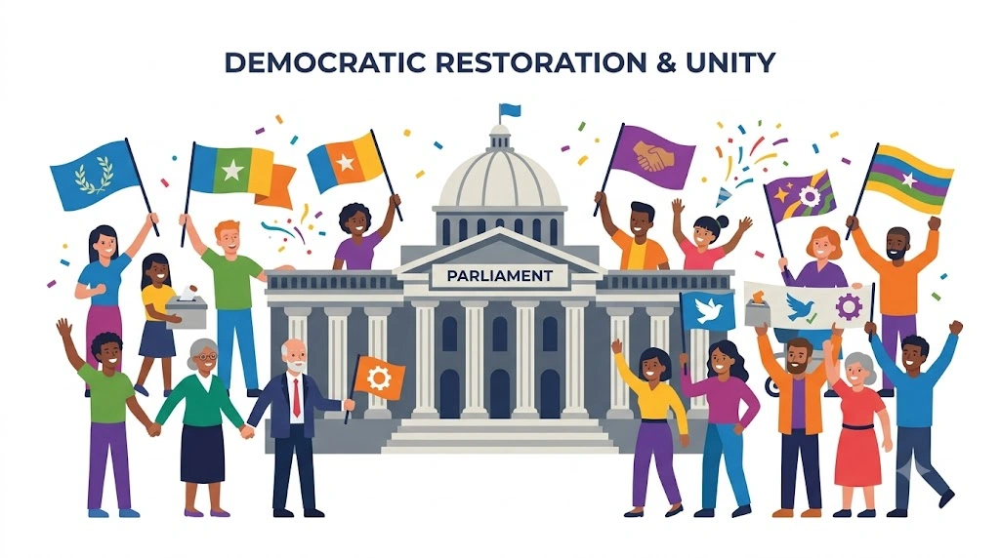
विषय सार 10: कांग्रेस प्रणाली की पुनर्स्थापना एवं उसकी प्रकृति
दृश्य व्याख्या एवं परीक्षा अंतर्दृष्टि : यह 16:9 सचित्र चार्ट 'कांग्रेस प्रणाली की पुनर्स्थापना' (Restoration of the Congress System) की अनूठी प्रकृति को स्पष्ट करता है। यद्यपि इंदिरा गांधी ने कांग्रेस को पुनः स्थापित किया, लेकिन यह पुरानी नेहरूवादी कांग्रेस प्रणाली जैसी नहीं थी। पुरानी व्यवस्था में गुटीय संतुलन और आंतरिक लोकतंत्र था, जबकि नई कांग्रेस पूर्णतः एक सर्वोपरि नेता (इंदिरा गांधी) की व्यक्तिगत लोकप्रियता, सीधे जन-संपर्क और प्रतिबद्ध नौकरशाही/न्यायपालिका पर आधारित थी।
🎬 सिनेमाई संदर्भ (NCERT Cinema Feature): फिल्म 'ज़ंजीर' (1973)
फिल्म एवं संदर्भ: प्रकाश मेहरा निर्देशित और सलीम-जावेद लिखित फिल्म 'ज़ंजीर' (1973) में अमिताभ बच्चन द्वारा निभाया गया 'एंग्री यंग मैन' (Angry Young Man - इन्स्पेक्टर विजय) का किरदार।
राजनैतिक-सामाजिक जुड़ाव: 1970 के दशक की शुरुआत में गरीबी, मुद्रास्फीति और बेरोजगारी से परेशान भारतीय युवाओं के मोहभंग, व्यवस्था के प्रति फैले आक्रोश और भ्रष्टाचार के खिलाफ न्याय की तीव्र मांग का यह किरदार एक जीवंत सामाजिक प्रतीक बन गया।
💡 अध्याय 12 का 'गुरुमंत्र' (Quick Chapter Summary)
- 1964-1966 (उत्तराधिकार 1 & 2): नेहरू के बाद शास्त्री जी (जय जवान जय किसान) -> ताशकंद निधन -> 1966 में इंदिरा गांधी की मोरारजी देसाई पर गुप्त मतदान में जीत।
- 1967 (चौथा आम चुनाव): 'राजनैतिक भूकंप' (9 राज्यों में हार), डॉ. राममनोहर लोहिया का 'गैर-कांग्रेसवाद', संविद (SVD) सरकारें और गया लाल का 'आया राम गया राम' (दल-बदल)।
- 1969 (महान कांग्रेस विभाजन): सिंडिकेट बनाम इंदिरा -> 10-सूत्रीय कार्यक्रम व 14 बैंकों का राष्ट्रीयकरण -> राष्ट्रपति चुनाव में वी.वी. गिरि की जीत -> Congress (O) बनाम Congress (R) विभाजन।
- 1971 (पाँचवाँ आम चुनाव): 'गरीबी हटाओ' बनाम 'इंदिरा हटाओ' (ग्रैंड अलायंस) -> 375 सीटों पर प्रचंड जीत -> दिसंबर 1971 युद्ध में बांग्लादेश का जन्म -> 1972 विधानसभा चुनाव विजय।
- पुनर्स्थापना की प्रकृति: नई कांग्रेस प्रणाली व्यक्तिगत लोकप्रियता, सर्वोपरि नेता के प्रति निष्ठा और प्रतिबद्ध नौकरशाही/न्यायपालिका पर आधारित थी।